Manage Scopes and Collections
Scopes and collections can be managed by means of the UI, CLI, and REST API.
Understanding Scopes and Collections
Scopes and collections allow documents to be categorized and organized, within a bucket. A collection is a data container, defined on Couchbase Server, within a bucket whose type is either Couchbase or Ephemeral. A scope is a mechanism for the grouping of multiple collections. A complete overview is provided in Scopes and Collections.
Manage Scopes and Collections with the UI
The following sequence demonstrates how to create, examine, and delete scopes and collections, using the UI of Couchbase Web Console. Proceed as follows:
-
Access Couchbase Web Console, and left-click on the Buckets tab, in the vertical, left-hand navigation bar:
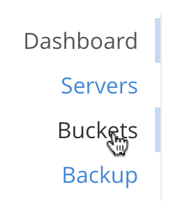This brings up the Buckets screen.
-
Add a new bucket, named testBucket. Left-click on the ADD BUCKET tab, at the upper right:
This brings up the Add Data Bucket dialog. Use this to create testBucket as a Couchbase bucket of 256 MB, as follows:
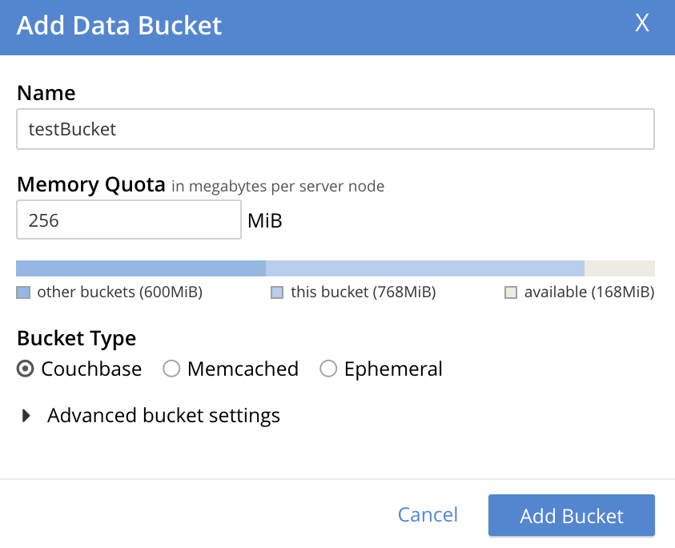Left-click on the Add Bucket button, to create. The Buckets screen now displays the newly created bucket:
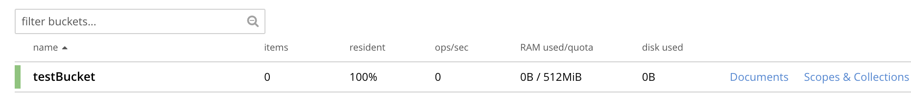 -
Examine the new bucket’s default collection. At the right-hand side of the row that displays the new bucket, two options appear: Documents and Scopes & Collections. Left-click on the Scopes & Collections option:
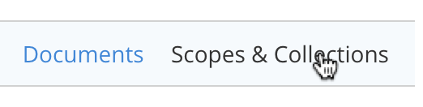This brings up the Scopes & Collections screen, which appears as follows:
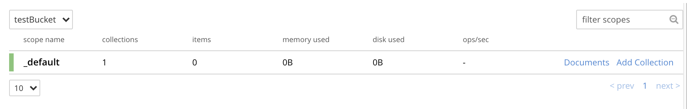The screen features a single row, which confirms the existence of the _default scope. As its name indicates, this scope is created by default for each new bucket. Collections that are created without any administrator-defined scope specified as their destination are duly saved in the _default scope.
To examine the contents of the _default scope, left-click on the row. The row expands as follows:
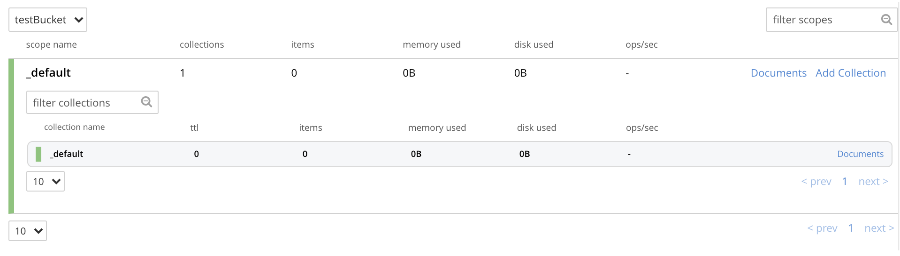This indicates that the _default scope contains a single collection, which is the _default collection. As its name indicates, this collection is created by default, within the _default scope, for each new bucket. Documents that are created without any administrator-defined collection specified as their destination are duly saved in the _default collection.
-
Add a scope to the bucket. Left-click on the ADD SCOPE tab, at the upper right of the screen:
This brings up the Add Scope dialog, which appears as follows:
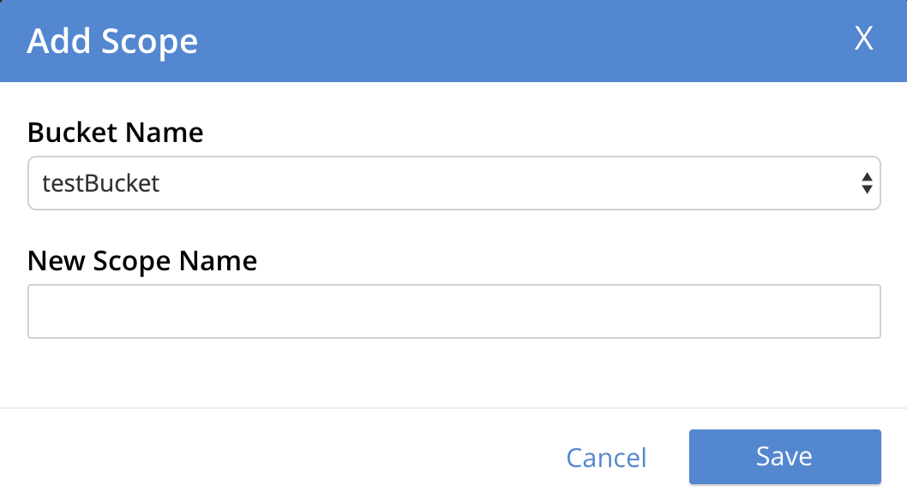
Enter the name of a new scope into the New Scope Name field: for example, MyScope. Then, left-click on the Save button.
The Scopes & Collections screen now appears as follows:
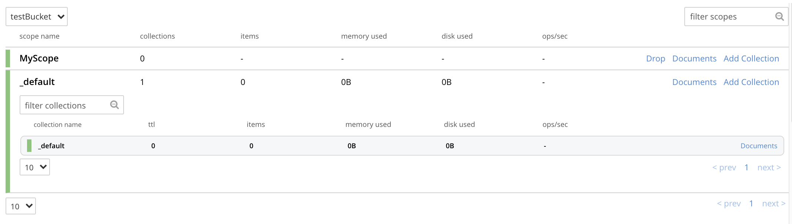
The new scope, MyScope, is now displayed.
-
Add a new collection, within the new scope. At the extreme right of the row for MyScope are two options: Drop and Add Collection. Left-click on Add Collection:
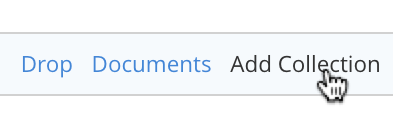
This brings up a dialog entitled Add Collection into MyScope scope:
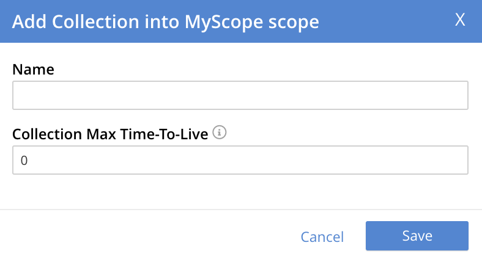
Enter the name of a new collection into the Name field: for example, MyCollection. The Collection Max Time-To-Live field can, for this example, be left at its default value of
0— which indicates that no expiration value is assigned to the collection and the documents it contains. (For information, see Expiration). Left-click on the Save button.Next, left-click on the row for MyScope. The row expands, as follows:
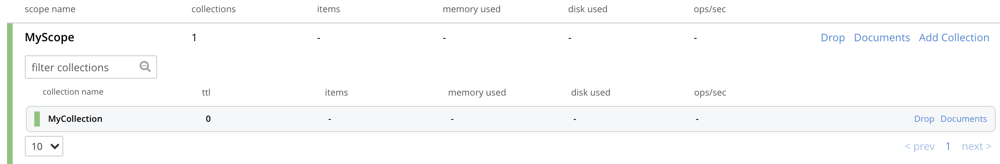
The new collection, MyCollection, is thus shown to have been created within the scope MyScope.
Manage Scopes and Collections with the CLI
The following sequence of CLI commands demonstrates how to create, examine, and delete scopes and collections.
Note that the create bucket, scope, and collection commands are asynchronous by default. If you create a collection right after creating a scope, or create an index right after creating a collection, it is possible that you may encounter a failure if the cluster is still being updated. In this case, we recommend that the application wait for the cluster to be updated or retry the operation.
Proceed as follows:
At the command-line prompt, proceed as follows:
-
Create a bucket, named
testBucket, using the couchbase-clibucket-createcommand./opt/couchbase/bin/couchbase-cli bucket-create \ --cluster localhost:8091 --username Administrator \ --password password --bucket testBucket --bucket-type couchbase \ --bucket-ramsize 100
If the command is successful, the following output is displayed:
SUCCESS: Bucket created
For more information on this command, see bucket-create.
-
Create a scope, using the couchbase-cli
collection-managecommand. The--bucketparameter specifies the name of the bucket within which the scope will be created; and the--create-scopeparameter specifies the name of the scope./opt/couchbase/bin/couchbase-cli collection-manage \ --cluster http://localhost:8091 \ --username Administrator \ --password password \ --bucket testBucket \ --create-scope my_scope
If the command is successful, the following output is displayed:
SUCCESS: Scope created
-
List the scopes now contained by the bucket
testBucket./opt/couchbase/bin/couchbase-cli collection-manage \ -c localhost \ --username Administrator \ --password password \ --bucket testBucket \ --list-scopes
The following output is displayed:
my_scope _default
This indicates that
testBucketnow contains two scopes. One is the_default, the other is the newly created scopemy_scope. -
Use
collection-managesuccessively, to create two collections withinmy_scope. The name of the collection to be created is specified with the--create-collectionparameter, using a path in dot format (that is, in the form scope-name.collection-name) to specify the destination scope. Then, list the collections in the scope, using collection-manage with the--list-collectionsparameter.Create the
my_scope.my_collection_in_my_scope_1collection:/opt/couchbase/bin/couchbase-cli collection-manage -c localhost \ --username Administrator \ --password password \ --bucket testBucket \ --create-collection my_scope.my_collection_in_my_scope_1 \ --max-ttl 0
The
max-ttlparameter is set at0, which indicates that no expiration time is applied to the new collection (this being the default — for information on expiration, see Expiration).On success, the output is as follows:
SUCCESS: Collection created
Create the
my_scope.my_collection_in_my_scope_2collection:/opt/couchbase/bin/couchbase-cli collection-manage -c localhost \ --username Administrator \ --password password \ --bucket testBucket \ --create-collection my_scope.my_collection_in_my_scope_2
On success, the output is as again follows:
SUCCESS: Collection created
Now, list all collections:
/opt/couchbase/bin/couchbase-cli collection-manage -c localhost \ --username Administrator \ --password password \ --bucket testBucket \ --list-collections my_scope
If the command is successful, the output features a list of all created collections within
my_scope:Scope my_scope: - my_collection_in_my_scope_2 - my_collection_in_my_scope_1The output indicates that
my_scopenow contains the collectionsmy_collection_in_my_scope_1andmy_collection_in_my_scope_2. -
Create a collection in the
_defaultscope, and then list collections within that scope./opt/couchbase/bin/couchbase-cli collection-manage -c localhost \ --username Administrator \ --password password \ --bucket testBucket \ --create-collection _default.my_collection_in_default_scope
The argument to the
create-collectionparameter thus specifies a new collection,my_collection_in_default_scope, to be created in the_defaultscope. (Note, however that, as a convenience for the CLI-user, this notation can be shortened; by simply omitting explicit reference to the_defaultscope, and preceding the name of the new collection with the dot alone: thus, the argument tocreate-collectionis shortened to.my_collection_in_default_scope.)On success, the following output is displayed:
SUCCESS: Collection created
Now, list collections within the scope:
/opt/couchbase/bin/couchbase-cli collection-manage -c localhost \ --username Administrator \ --password password \ --bucket testBucket \ --list-collections _default
On success, a list of the collections in the scope is displayed:
Scope _default: - my_collection_in_default_scope - _defaultThe output indicates that the
_defaultscope now contains two collections, which are the_defaultcollection, and the newly created collectionmy_collection_in_default_scope. -
Create two documents, within the collection
my_collection_in_my_scope_1, using thecbc createcommand. Scope and collection are respectively specified with the--scopeand--collectionflags (note that if no scope or collection is explicitly specified, the default scope or collection is assumed)./opt/couchbase/bin/cbc create \ -u Administrator -P password testDocument1 \ -U couchbase://localhost/testBucket \ --scope='my_scope' \ --collection='my_collection_in_my_scope_1' \ -V '{"key1" : "value1"}'On success, this produces output indicating that the named document has been saved, and providing its CAS number.
testDocument1 Stored. CAS=0x1668d67ee31b0000 SYNCTOKEN=816,47341375326027,5Now, create the second document:
/opt/couchbase/bin/cbc create -u Administrator -P password testDocument2 \ -U couchbase://localhost/testBucket \ --scope='my_scope' \ --collection='my_collection_in_my_scope_1' \ -V '{"key2" : "value2"}'On success, the output is as follows:
testDocument2 Stored. CAS=0x1668d68983750000 SYNCTOKEN=569,122315102163226,5 -
Display statistics on existing collections, using the
cbstatscommand, specifying the collections parameter./opt/couchbase/bin/cbstats -u Administrator -p password \ -b testBucket localhost:11210 collections
Statistics are displayed as follows:
0x0:0x0:collections_mem_used: 0 0x0:0x0:data_size: 0 0x0:0x0:history: true 0x0:0x0:items: 0 0x0:0x0:name: _default 0x0:0x0:ops_delete: 0 0x0:0x0:ops_get: 0 0x0:0x0:ops_store: 0 0x0:0x0:scope_name: _default 0x0:0xa:collections_mem_used: 0 0x0:0xa:data_size: 120832 0x0:0xa:history: true 0x0:0xa:items: 0 0x0:0xa:name: my_collection_in_default_scope 0x0:0xa:ops_delete: 0 0x0:0xa:ops_get: 0 0x0:0xa:ops_store: 0 0x0:0xa:scope_name: _default 0x8:0x8:collections_mem_used: 180 0x8:0x8:data_size: 117882 0x8:0x8:history: true 0x8:0x8:items: 2 0x8:0x8:name: my_collection_in_my_scope_1 0x8:0x8:ops_delete: 0 0x8:0x8:ops_get: 0 0x8:0x8:ops_store: 2 0x8:0x8:scope_name: my_scope 0x8:0x9:collections_mem_used: 0 0x8:0x9:data_size: 118784 0x8:0x9:history: true 0x8:0x9:items: 0 0x8:0x9:name: my_collection_in_my_scope_2 0x8:0x9:ops_delete: 0 0x8:0x9:ops_get: 0 0x8:0x9:ops_store: 0 0x8:0x9:scope_name: my_scope manifest_uid: 4
The output identifies all data associated with each collection using a pair of hexadecimal prefixes, these are the scope and collection unique identifiers. For example
0x8:0x9:name:is the name of the collection with id0x8in the scope with id0x9.The
historylisting indicates for each collection whether a change-history is currently active. For information, see Collection Change-History.For more information on the listings in the above output, see the collections reference page for
cbstats.The identifier or name (with scope) of a collection can be used to return data about a single collection. Here
cbstatscan also select collections in the default scope using a single../opt/couchbase/bin/cbstats -u Administrator -p password -b testBucket \ localhost:11210 collections my_scope.my_collection_in_my_scope_2 /opt/couchbase/bin/cbstats -u Administrator -p password -b testBucket \ localhost:11210 collections id 0x9 /opt/couchbase/bin/cbstats -u Administrator -p password -b testBucket \ localhost:11210 collections .my_collection_in_default_scope
-
Again display statistics on existing collections using the
cbstatscommand, this time specifying thecollections-detailsparameter./opt/couchbase/bin/cbstats -u Administrator -p password -b testBucket \ localhost:11210 collections-details
Statistics are displayed as follows:
0x0:0x0:collections_mem_used: 0 0x0:0x0:data_size: 0 0x0:0x0:history: true 0x0:0x0:items: 0 0x0:0x0:name: _default 0x0:0x0:ops_delete: 0 0x0:0x0:ops_get: 0 0x0:0x0:ops_store: 0 0x0:0x0:scope_name: _default 0x0:0xa:collections_mem_used: 0 0x0:0xa:data_size: 120832 0x0:0xa:history: true 0x0:0xa:items: 0 0x0:0xa:name: my_collection_in_default_scope 0x0:0xa:ops_delete: 0 0x0:0xa:ops_get: 0 0x0:0xa:ops_store: 0 0x0:0xa:scope_name: _default 0x8:0x8:collections_mem_used: 180 0x8:0x8:data_size: 117882 0x8:0x8:history: true 0x8:0x8:items: 2 0x8:0x8:name: my_collection_in_my_scope_1 0x8:0x8:ops_delete: 0 0x8:0x8:ops_get: 0 0x8:0x8:ops_store: 2 0x8:0x8:scope_name: my_scope 0x8:0x9:collections_mem_used: 0 0x8:0x9:data_size: 118784 0x8:0x9:history: true 0x8:0x9:items: 0 0x8:0x9:name: my_collection_in_my_scope_2 0x8:0x9:ops_delete: 0 0x8:0x9:ops_get: 0 0x8:0x9:ops_store: 0 0x8:0x9:scope_name: my_scope manifest_uid: 4
The output, which is presented here in truncated form, provides additional details on scopes, collections, and their content; including sequence numbers, manifest uids, and per-vBucket information. Note that an identifying vBucket-number can be specified, to produce output for that vBucket alone:
/opt/couchbase/bin/cbstats -u Administrator -p password -b testBucket localhost:11210 collections-details 8
The number
8having been specified, displayed statistics are for vBucket 8 only:vb_8:0x0:disk_size: 0 vb_8:0x0:high_seqno: 0 vb_8:0x0:history: true vb_8:0x0:items: 0 vb_8:0x0:name: _default vb_8:0x0:ops_delete: 0 vb_8:0x0:ops_get: 0 vb_8:0x0:ops_store: 0 vb_8:0x0:persisted_high_seqno: 0 vb_8:0x0:scope: 0x0 vb_8:0x0:start_seqno: 0 vb_8:0x8:disk_size: 115 vb_8:0x8:high_seqno: 2 vb_8:0x8:history: true vb_8:0x8:items: 0 vb_8:0x8:name: my_collection_in_my_scope_1 vb_8:0x8:ops_delete: 0 vb_8:0x8:ops_get: 0 vb_8:0x8:ops_store: 0 vb_8:0x8:persisted_high_seqno: 2 vb_8:0x8:scope: 0x8 vb_8:0x8:start_seqno: 2 vb_8:0x9:disk_size: 116 vb_8:0x9:high_seqno: 3 vb_8:0x9:history: true vb_8:0x9:items: 0 vb_8:0x9:name: my_collection_in_my_scope_2 vb_8:0x9:ops_delete: 0 vb_8:0x9:ops_get: 0 vb_8:0x9:ops_store: 0 vb_8:0x9:persisted_high_seqno: 3 vb_8:0x9:scope: 0x8 vb_8:0x9:start_seqno: 3 vb_8:0xa:disk_size: 118 vb_8:0xa:high_seqno: 4 vb_8:0xa:history: true vb_8:0xa:items: 0 vb_8:0xa:name: my_collection_in_default_scope vb_8:0xa:ops_delete: 0 vb_8:0xa:ops_get: 0 vb_8:0xa:ops_store: 0 vb_8:0xa:persisted_high_seqno: 4 vb_8:0xa:scope: 0x0 vb_8:0xa:start_seqno: 4 vb_8:collections: 4 vb_8:manifest:uid: 4
For more information on the listings in the above output, see the collections and collections-details reference pages for
cbstats. -
Drop a collection from the created scope, then list collections within that scope.
/opt/couchbase/bin/couchbase-cli collection-manage -c localhost \ --username Administrator \ --password password \ --bucket testBucket \ --drop-collection my_scope.my_collection_in_my_scope_1
If the command is successful, the following is displayed:
SUCCESS: Collection dropped
Now, list collections in the scope:
/opt/couchbase/bin/couchbase-cli collection-manage -c localhost \ --username Administrator \ --password password \ --bucket testBucket \ --list-collections my_scope
Output features each collection in the specified scope:
Scope my_scope: - my_collection_in_my_scope_2The output indicates that the collection
my_collection_in_my_scope_1has now been dropped frommy_scope. -
Drop the created scope, then list scopes.
/opt/couchbase/bin/couchbase-cli collection-manage -c localhost \ --username Administrator \ --password password \ --bucket testBucket \ --drop-scope my_scope
On success, the following output is displayed:
SUCCESS: Scope dropped
List all remaining scopes:
/opt/couchbase/bin/couchbase-cli collection-manage -c localhost \ --username Administrator \ --password password \ --bucket testBucket \ --list-scopes
The following output is displayed:
_default
This indicates that
my_scope, and the collection it contained,my_collection_in_my_scope_2, have been dropped.
This concludes the sequence of commands.
Manage Scopes and Collections with the REST API
The following sequence of REST API commands demonstrates how to create, examine, and delete scopes and collections. Proceed as follows:
At the command-line prompt, proceed as follows:
-
Create a bucket, named
testBucket, using the/pools/default/bucketsREST method:curl -X POST -u Administrator:password \ http://localhost:8091/pools/default/buckets \ -d name=testBucket \ -d ramQuotaMB=100
For information on this REST call and its parameters, see Creating and Editing Buckets.
-
Create a scope. This is a POST operation, using the
/pools/default/buckets/<bucket>/scopesendpoint, and specifying the-nameparameter.curl -u Administrator:password -X POST \ http://localhost:8091/pools/default/buckets/testBucket/scopes \ -d name=my_scope
If successful, the command returns a uid for the action (this is principally for internal use, and need not be tracked by the user):
{"uid":1}Now, examine the collections manifest for the specified bucket. This is a GET operation, using the
/pools/default/buckets/<bucket>/scopesendpoint.curl -u Administrator:password -X GET \ http://localhost:8091/pools/default/buckets/testBucket/scopes
This returns the following output:
{"uid":"1","scopes":[{"name":"my_scope","uid":"8","collections":[]},{"name":"_default","uid":"0","collections":[{"name":"_default","uid":"0","maxTTL":0,"history":true}]}]}Formatted, this output is as follows:
{ "uid": "1", "scopes": [ { "name": "my_scope", "uid": "8", "collections": [] }, { "name": "_default", "uid": "0", "collections": [ { "name": "_default", "uid": "0", "maxTTL": 0, "history": true } ] } ] }This output shows that the bucket now contains two scopes, which are
my_scopeand_default. The_defaultscope contains a single collection, which is also named_default. ThemaxTTLfor the collection is0, which means that by default, no expiration time has been applied to this collection. (For information on expiration, see Expiration). -
Create two collections, within the created scope. This requires a POST operation, specifying the created scope as a path parameter, and using the
nameparameter to specify the new collection-name. For the first collection, enter the following command:curl -u Administrator:password -X POST \ http://localhost:8091/pools/default/buckets/testBucket/scopes/my_scope/collections \ -d name=my_collection_in_my_scope_1 \ -d maxTTL=0
The
maxTTLparameter thus establishes that there is no expiration time applied to the new collection (which is, in fact, the default). If successful, the operation returns a uid.{"uid":2}Create the second collection as follows:
curl -u Administrator:password -X POST \ http://localhost:8091/pools/default/buckets/testBucket/scopes/my_scope/collections \ -d name=my_collection_in_my_scope_2
Again, success returns a uid:
{"uid":3}Now, re-examine the collections manifest for the bucket.
curl -u Administrator:password -X GET \ http://localhost:8091/pools/default/buckets/testBucket/scopes
The unformatted output is as follows:
{"uid":"3","scopes":[{"name":"my_scope","uid":"8","collections":[{"name":"my_collection_in_my_scope_2","uid":"9","history":true,"maxTTL":0},{"name":"my_collection_in_my_scope_1","uid":"8","history":true,"maxTTL":0}]},{"name":"_default","uid":"0","collections":[{"name":"_default","uid":"0","maxTTL":0,"history":true}]}]}When formatted, the output takes the following appearance:
{ "uid": "3", "scopes": [ { "name": "my_scope", "uid": "8", "collections": [ { "name": "my_collection_in_my_scope_2", "uid": "9", "history": true, "maxTTL": 0 }, { "name": "my_collection_in_my_scope_1", "uid": "8", "history": true, "maxTTL": 0 } ] }, { "name": "_default", "uid": "0", "collections": [ { "name": "_default", "uid": "0", "maxTTL": 0, "history": true } ] } ] }This indicates that the collections
my_collection_in_my_scope_1andmy_collection_in_my_scope_2have been successfully created inmy_scope. -
Create a collection in the default scope. This is a POST operation, specifying the
_defaultscope as a path parameter, and thenameparameter to specify the new collection-name.curl -u Administrator:password -X POST \ http://localhost:8091/pools/default/buckets/testBucket/scopes/_default/collections \ -d name=my_collection_in_default_scope
A uid is returned:
{"uid":4}Now, re-examine the collections manifest for the bucket.
curl -u Administrator:password -X GET \ http://localhost:8091/pools/default/buckets/testBucket/scopes
This returns the following:
{"uid":"4","scopes":[{"name":"my_scope","uid":"8","collections":[{"name":"my_collection_in_my_scope_2","uid":"9","history":true,"maxTTL":0},{"name":"my_collection_in_my_scope_1","uid":"8","history":true,"maxTTL":0}]},{"name":"_default","uid":"0","collections":[{"name":"my_collection_in_default_scope","uid":"a","history":true,"maxTTL":0},{"name":"_default","uid":"0","maxTTL":0,"history":true}]}]}When formatted the output is as follows:
{ "uid": "4", "scopes": [ { "name": "my_scope", "uid": "8", "collections": [ { "name": "my_collection_in_my_scope_2", "uid": "9", "history": true, "maxTTL": 0 }, { "name": "my_collection_in_my_scope_1", "uid": "8", "history": true, "maxTTL": 0 } ] }, { "name": "_default", "uid": "0", "collections": [ { "name": "my_collection_in_default_scope", "uid": "a", "history": true, "maxTTL": 0 }, { "name": "_default", "uid": "0", "maxTTL": 0, "history": true } ] } ] }This indicates that the collection
my_collection_in_default_scopehas been successfully created in the_defaultscope, and so appears alongside the_defaultcollection. -
Drop a collection from the created scope. This requires a
DELETEoperation, and the endpoint that specifies the collection that is to be dropped.curl -u Administrator:password -X DELETE \ http://localhost:8091/pools/default/buckets/testBucket/scopes/my_scope/\ collections/my_collection_in_my_scope_1
This returns a uid:
{"uid":5}Now, re-examine the collections manifest for the bucket.
curl -u Administrator:password -X GET \ http://localhost:8091/pools/default/buckets/testBucket/scopes
The output (here formatted) indicates that the collection
my_collection_in_my_scope_1has successfully been dropped frommy_scope:{ "uid": "5", "scopes": [ { "name": "my_scope", "uid": "8", "collections": [ { "name": "my_collection_in_my_scope_2", "uid": "9", "history": true, "maxTTL": 0 } ] }, { "name": "_default", "uid": "0", "collections": [ { "name": "my_collection_in_default_scope", "uid": "a", "history": true, "maxTTL": 0 }, { "name": "_default", "uid": "0", "maxTTL": 0, "history": true } ] } ] } -
Drop the created scope, and examine the manifest.
curl -u Administrator:password -X DELETE \ http://localhost:8091/pools/default/buckets/testBucket/scopes/my_scope
This returns a uid:
{"uid":6}Examine the manifest:
curl -u Administrator:password -X GET \ http://localhost:8091/pools/default/buckets/testBucket/scopes
The output (here formatted) is as follows:
{ "uid": "6", "scopes": [ { "name": "_default", "uid": "0", "collections": [ { "name": "my_collection_in_default_scope", "uid": "a", "history": true, "maxTTL": 0 }, { "name": "_default", "uid": "0", "maxTTL": 0, "history": true } ] } ] }This indicates that
my_scopehas successfully been dropped; and with it, the collectionmy_collection_in_my_scope_2.
This concludes the sequence of commands.
See Also
An overview of scopes and collections is provided in Scopes and Collections. A reference page for each of the available REST methods is provided at Scopes and Collections API. See also the CLI reference page for the collection-manage command. (Note that the REST and CLI pages include information on specifying an expiration time for collections.)
For information on assigning roles that permit access to scopes and collections, see Manage Users, Groups, and Roles.